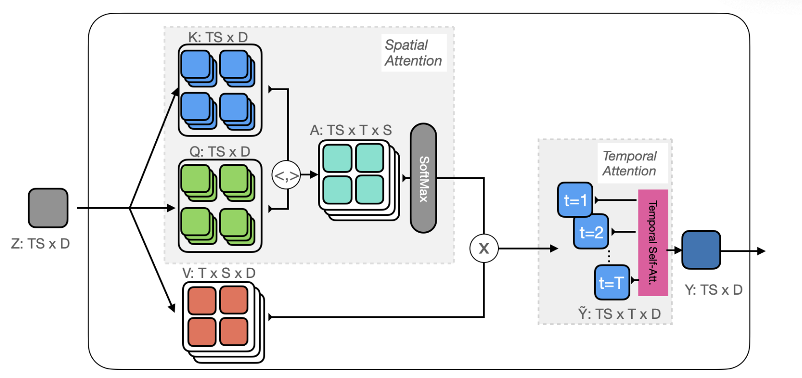

Summary of some papers
Categorization
Audiovisual SlowFast Networks for Video Recognition
A triple-branch architecture involving an audio branch built upon SlowFast. The motivation is to handle scenarios such as whistling, playing saxophone etc. Some details:
- Audio has a higher frequency, so sampled faster than fast branch before lateral connected to fast and slow branch.
- Studied A->F->S (sample T of audio, fuse with F, sample T again, fuse with slow), A->FS (fuse F and S, before fusing with audio), Audiovisual Nonlocal (A->FS + attention) integrations.
- As audio converges faster, add dropPathway for regularization.
- Add audio-visual syncrhonization task and adopt a curriculum to sample negatives.
X3D: Expanding Architectures for Efficient Video Recognition
The motivation is to answer the questions raised in Section 3--different tradeoffs between accuracy and computation.
- Baseline: X2D which can be interpreted as a slow pathway
- Expand operations in 6 axes (temporal size, frame-rate, spatial resolution, depth or number of layers, width or channel number for layers, bottleneck with).
- Progressive expansion: trade-off accuracy and computational cost. Each step only one axis is changed, similar to coordinate descent in the hyper-parameter space defined by the axes.
Multiscale Vision Transformers
Connecting multiscale feature hiearchies with transformer models. Evalutes on video and image recognition tasks.
- Adopts pooling operation on K, V, Q while maintaining the MHA architecture.
Keeping your eye on the ball: Trajectory attention in video transformers
Model temporal correspondences to facilitate learning about dynamic scenes. Propose a variant of self-attention,trajectory-attention, which aims to share information along the motion path, rather than pooling axially along the temporal dim or over entire space-time feature volume.
- Pooling along motion trajectories as opposed to pooling along across temporal dimension or 3D space-time feature volume.
- Video self-attention: To reduce the quadratic complexity in space and time, previous methods either interleave or stack time/space attention in a sequence. This work performs attention along trajectories.
- Approximating attention - Orthoformer
Before Attention
B, N, C = x.shape
P = seq_len
F = num_frames
h = self.num_heads
# project x to q, k, v vaalues
q, k, v = self.qkv(x).chunk(3, dim=-1)
# Reshape: 'b n (h d) -> (b h) n d'
q, k, v = map(
lambda t: rearrange(t, 'b n (h d) -> (b h) n d', h=h), (q, k, v))
# remove CLS token from q, k, v
(cls_q, q_), (cls_k, k_), (cls_v, v_) = map(
lambda t: (t[:, 0:1], t[:, 1:]), (q, k, v))
# let CLS token attend to key / values of all patches across time and space
cls_out = qkv_attn(cls_q * self.scale, k, v)
cls_out = rearrange(cls_out, f'(b h) f d -> b f (h d)', f=1, h=h)
Spatial Joint Attention
Basically, the attention is TS x TS, to be multiplied with value T x S x D. The S dimension is multiplied out.

# Using full attention
q_dot_k = q_ @ k_.transpose(-2, -1)
q_dot_k = rearrange(q_dot_k, 'b q (f n) -> b q f n', f=F) #Bh x TS x T x S
space_attn = (self.scale * q_dot_k).softmax(dim=-1)
attn = self.attn_drop(space_attn)
v_ = rearrange(v_, 'b (f n) d -> b f n d', f=F, n=P) # Bh x T x S x D
x = torch.einsum('b q f n, b f n d -> b q f d', attn, v_) # Bh x TS x T x D
Temporal Attention
For query: diagonal of TxT matrix, 1 tokenn per frame -> linear mapping + reorganize multi-head dimension h -> B x h x TS x D.
For key and value, linear mapping + reorganize multi-head dimension h ->: B x h x TS x T x D
Attn: with query and key, the attention is of shape B x h x TS x T
Output: with Attn and value, the shape is B x h x TS x D -> B x TS x hD -> linear projection
# Temporal attention: query is the similarity-aggregated patch
x = rearrange(x, '(b h) s f d -> b s f (h d)', b=B) # Bh x TS x T x D -> B x TS x T x hD
x_diag = rearrange(x, 'b (g n) f d -> b g n f d', g=F) # B x TS x T x hD -> B x T x S x T x hD
x_diag = torch.diagonal(x_diag, dim1=-4, dim2=-2) # B x T x S x T x hD -> B x S x hD x T
x_diag = rearrange(x_diag, f'b n d f -> b (f n) d', f=F) # B x S x hD x T -> B x TS x hD
q2 = self.proj_q(x_diag)
k2, v2 = self.proj_kv(x).chunk(2, dim=-1)
q2 = rearrange(q2, f'b s (h d) -> b h s d', h=h) # query: B x TS x hD -> B x h x TS x D
q2 *= self.scale
k2, v2 = map(
lambda t: rearrange(t, f'b s f (h d) -> b h s f d', f=F, h=h), (k2, v2)) # key, value: B x h x TS x T x D
attn = torch.einsum('b h s d, b h s f d -> b h s f', q2, k2)
attn = attn.softmax(dim=-1)
x = torch.einsum('b h s f, b h s f d -> b h s d', attn, v2)
x = rearrange(x, f'b h s d -> b s (h d)')
# concat back the cls token
x = torch.cat((cls_out, x), dim=1)
x = self.proj(x)
x = self.proj_drop(x)
Approximate Attention
Utilize probability to optimize TS x TS computational cost